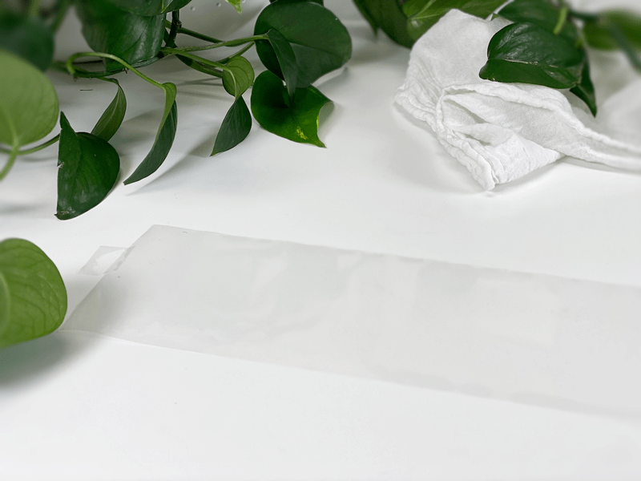
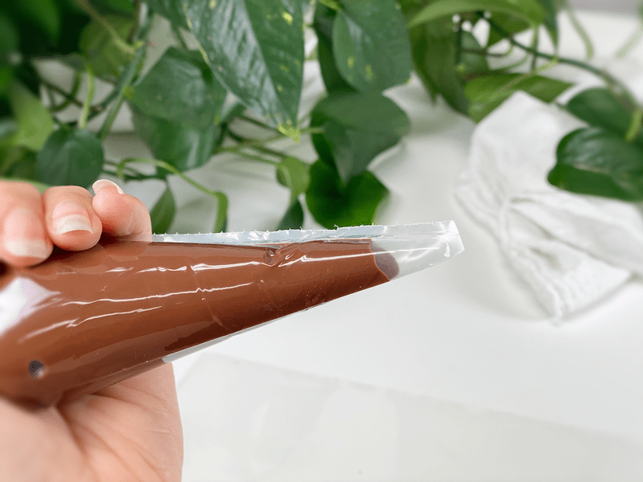
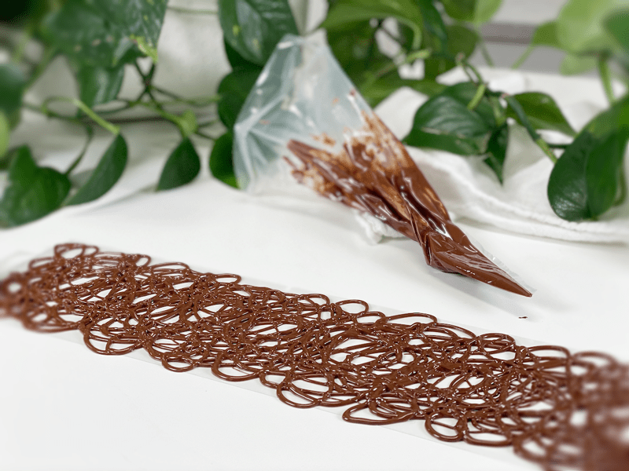
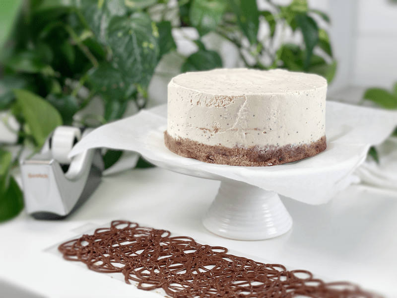
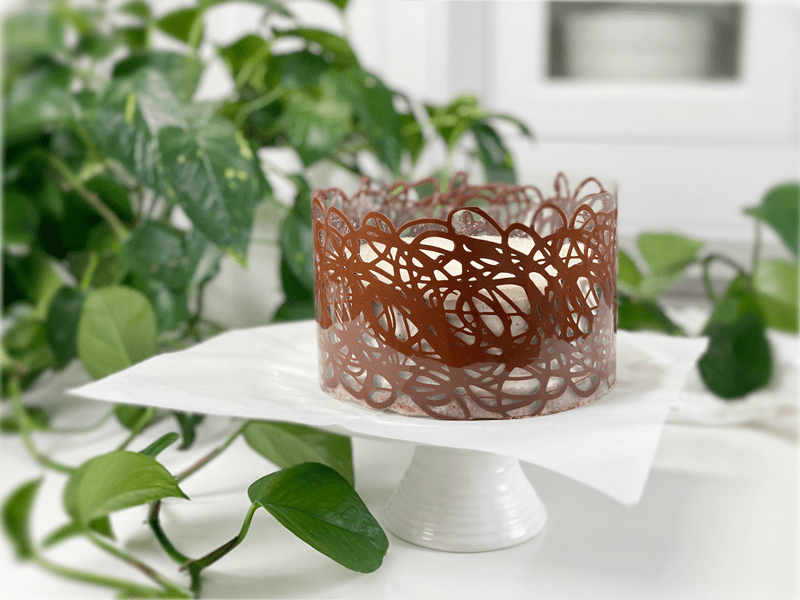
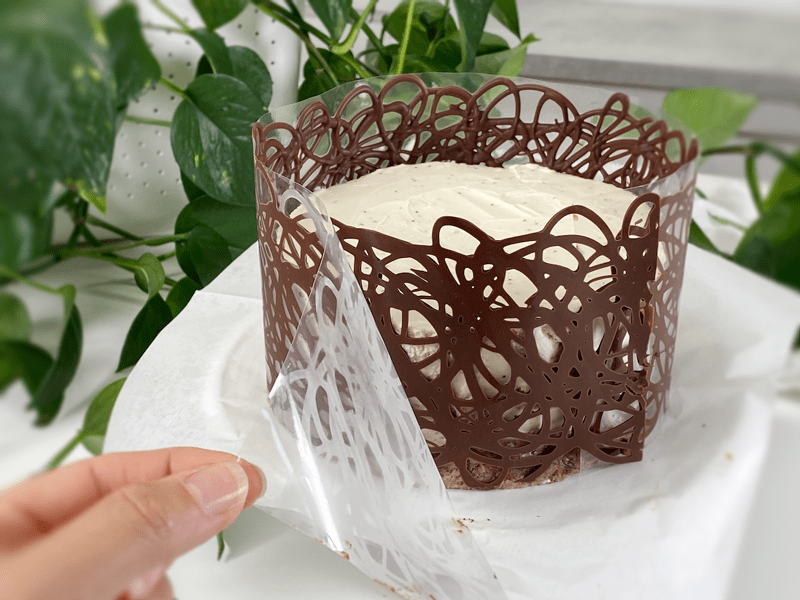

Chocolate Lace Collar | Cake Decorating
A chocolate lace collar is a delicate embellishment that can be wrapped around a cake, cheesecake, cupcakes, etc. It adds an incredible decorative and elegant touch to any dessert. They are super easy to make and will surely leave a lasting impression. Intrigued? Curious? Excited? I hope so, because today I will show you just how easy they are to make.

If the dessert above is making your taste buds water, you can check out the recipe (here).
Equipment Needed
- Acetate sheet or parchment paper
- Disposable piping bag or plastic bag with the corner snipped off
- Melted chocolate
Tips and Techniques
- For a 9-inch dessert, you will roughly need 1/2 cup melted chocolate. If you decide to use store-bought chocolate chips, you can melt them in a stainless or glass bowl by placing it in the dehydrator until melted.
- Whichever dessert you chose to wrap this chocolate collar around, you will want to make sure that the dessert is chilled prior to adding the chocolate collar.
- If your kitchen is really warm, you might have issues with the chocolate firming up in a timely fashion. If this is the case, place the acetate sheet on a flat surface (prior to starting) that will fit in the fridge so you can chill it for a minute or so. This step is tricky, because you can’t let the chocolate totally harden in the fridge, so you must keep a close eye on it.
- The KEY is NOT to let the chocolate set for a long time, otherwise it loses the malleability to go around the cake.
- You can make any design that you want; the main thing is that all the chocolate swirls need to overlap/connect so that it remains one piece when transferring it to the sides of the dessert.
 Ingredients
Ingredients
Preparation
- To find the size of the collar that you need to make, measure around the circumference of the cake or the pan it’s made in with a piece of string.
- Cut a sheet of acetate or a piece of parchment paper that is 1 inch longer than the circumference of the cake and about 1 inch taller than the height of the cake.
- Place the acetate or parchment paper strip in front of you on your work surface.
- Place the melted chocolate in a disposable piping bag or small plastic sandwich bag, snipping off the tip to make a small opening.
- If the chocolate is really runny, let it cool slightly so it doesn’t spread flat when piped out.
- If your chocolate gets too hard, place the piping bag in the dehydrator with the tip bent upward until it softens just a little bit.
- Starting at one end, pipe the melted chocolate in a random circular pattern directly onto the acetate strip, stopping 1″ short of the other end.
- Make sure that you pipe the chocolate the entire height of the strip.
- It is best to keep the chocolate within the confines of the strip. If you go over the edges, be sure to move the strip before the chocolate hardens so it doesn’t get stuck to the surface.
- Let the chocolate collar sit undisturbed until the chocolate loses its sheen and starts to set.
- Do not allow it to become hard, or it won’t bend around the shape of your dessert.
- You want the chocolate to remain flexible, but you don’t want it to be flowing, either.
- Depending on how warm it is in your kitchen, this can take 15-30+ minutes.
- If you feel the need to speed up the process, you can place the strip in the fridge, but only for 1-2 minutes. Check it every 30 seconds so it doesn’t harden all the way.
- When the chocolate is ready to be transferred to the dessert, remove the cake from the refrigerator. If you plan on placing the dessert on a serving dish, now the time.
- Carefully pick up the chocolate collar, holding each end, align the bottom edge of the middle of the strip with the bottom edge of the cake, and bring the edges around the dessert until they meet. The end with the 1″ tab should overlap the other end.
- Do not press the chocolate collar into the sides of the dessert until you have it fully in place. It will be too hard to move it once placed.
- As you wrap the collar around the cake, use GENTLE pressure so it adheres to the dessert.
- Place the dessert back into the fridge for about 20 minutes so the chocolate can set.
- Once the chocolate is hard, remove the cake from the fridge and slowly remove the acetate (or parchment) strip from the chocolate collar by gently pulling it away from the cake.
- If you used acetate paper, it can be washed and reused, so don’t throw it away.
- When cutting and serving the dessert with the chocolate lace collar, run the knife blade under hot water to heat up the blade. This will help the knife glide through the chocolate with a bit more ease.
- Cut slowly, using even pressure. If you press too hard too fast, it can cause the collar to break.
-

-
Place your premeasurd paper in front of you.
-

-
Pour the melted chocolate into a bag and snip off the tip.
-

-
In a continuous motion, create circular formations, overlapping from one end to the other.
-

-
Once the chocolate is partly dry (loses it glossiness) yet still pliable… lift the acetate paper by the ends and gently wrap it around the cake. Do not press it onto the cake until it is in position (there is NO redo in this step).
-

-
Place the cake in the fridge and chill for roughly 20 minutes so the chocolate can fully setup.
-

-
Carefully remove the acetate paper once the chocolate has set.
-

-
And there you have it! Now you can finish decorating your cake.
© AmieSue.com